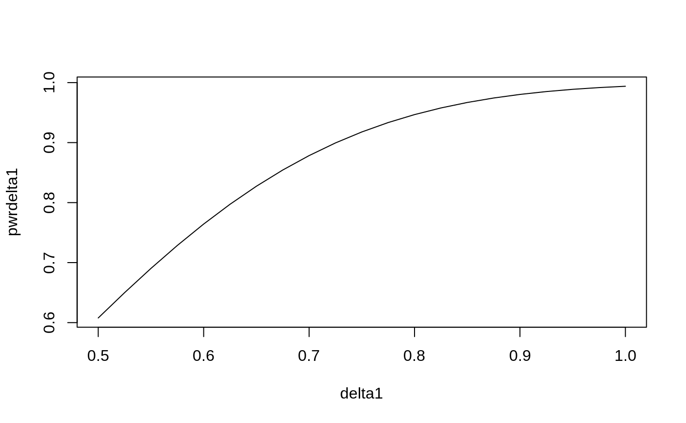

Introduction
Limited support is provided for 2-sample design with a normally distributed random variable as the outcome. Users are encouraged to look at guidance such as in Jennison and Turnbull (2000). We provide a tool where for a large sample case where a reasonable estimate of standard deviation is available, a reasonable sample size can be computed based straightforward distribution theory outlined below.
The problem considered
The overall sample size notation used for gsDesign is to consider a standardized effect size parameter which is referred to as \(\theta\) in Jennison and Turnbull (2000). We begin with the 2-sample normal problem where we assume a possibly different standard deviation in each treatment group. For \(j = 1, 2\), we let \(X_{j, i}\), \(i = 1, 2, \ldots n_j\) represent independent and identically distributed observations following a normal distribution with mean \(\mu_j\) and standard deviation \(\sigma_j\). The natural parameter for comparing the two distributions is
\[\delta = \mu_2 - \mu_1\]
and we wish to test if \(\delta > 0\) in a one-sided testing scenario to test for superiority of treatment 2 over treatment 1. We could also consider testing, say, \(\delta > \delta_0\) for a non-inferiority scenario with \(\delta_0<0\) or super superiority if \(\delta_0>0\). While normally a t-test would be used for this, for large sample sizes this would be nearly equivalent to a Z-test defined by:
\[Z=\frac{\bar X_2 - \bar X_1-\delta_0}{\sqrt{\sigma^2_2/n_2 + \sigma_1^2/n_1}}\approx \frac{\bar X_2 - \bar X_1}{\sqrt{s^2_2/n_2 + s_1^2/n_1}}=t\] where \(\bar X_j\) is the sample mean and \(s_j^2\) is the sample variance for group \(j=1,2\). The far right hand side of this is Welch’s t-test. For our examples we use this \(t\)-test and show that the sample size computation based on the \(Z\)-test above works well for the chosen problems.
Sample size
Thus, \(n_2=rn/(1+r)\), \(n_1=n/(1+r)\) and when \(r=1\) we have \(n_1=n_2=n/2\). Now that we have completed needed notation, those not interested in the theory behind the sample size and power calculation used may skip the rest of this section.
We let \[\sigma^2=(1+r)(\sigma_1^2+\sigma_2^2/r)\] and define \[ \theta= (\delta -\delta_0)/\sigma.\] Under the given assumptions, \[Z \sim \hbox{Normal}\left(\sqrt n\theta,1\right).\] Under the null hypothesis that \(\delta=\delta_0\), we have \(Z\sim \hbox{Normal}(0,1)\). Thus, regardless of \(n\) we have \[P_0[Z\ge \Phi^{-1}(1-\alpha)]=\alpha.\] Under the alternate hypothesis that \(\delta=\delta_1\) and we denote a corresponding \(\theta_1\). We define the type II error \(\beta\) and power \(1-\beta\) by
\[ \begin{align} 1-\beta =& P_1[Z\ge \Phi^{-1}(1-\alpha)]\\ =& P[Z-\sqrt n\theta_1\ge \Phi^{-1}(1-\alpha)-\sqrt n\theta_1]\\ =&\Phi(\Phi^{-1}(1-\alpha)-\sqrt n\theta_1)). \end{align}\]
If the power \(1-\beta\) is fixed, we can invert this formula to compute sample size with:
\[n= \left(\frac{\Phi^{-1}(1-\beta)+\Phi^{-1}(1-\alpha)}{\theta_1}\right)^2.\]
For 2-sided testing, we simply substitute \(\alpha/2\) for \(\alpha\) in the above two formulas.
Examples
We consider two examples to check the above formulas vs. nNormal(). We then confirm that the approximation is working well by simulating and confirming that the power and Type I error approximations are useful. Finally, we provide a simple group sequential design example.
Sample size
We consider an example with \(\sigma_2=1.25\), \(\sigma_1=1.6\), \(\delta=0.8\) and \(\delta_0=0\). We let the sample size ratio be 2 experimental group observations per control observation. We compute sample size with nNormal() assuming one-sided Type I error \(\alpha=0.025\) and 90% power (\(1-\beta=0.9\)).
Checking using the sample size formula above, we have:
Power
Now, assume we let the sample size be 200 and compute power under the same scenario.
nNormal(delta1 = 0.8, sd = 1.6, sd2 = 1.25, alpha = 0.025, n = 200, ratio = 2)
#> [1] 0.9466825From the power formula above, we duplicate this with:
If we want to plot power for a variety of sample sizes, we can input n as a vector:
n <- 100:200
pwrn <- nNormal(delta1 = 0.8, sd = 1.6, sd2 = 1.25, alpha = 0.025, n = n, ratio = 2)
plot(n, pwrn, type = "l")
Alternatively, you could fix sample size at 200 and plot power under different treatment effect assumptions:
Verification with simulation
Rather than simulate individual observations, we will take advantage of the fact that for \(j=1,2\)
\[\bar X_j\sim \hbox{Normal}(\mu_j,\sigma_j^2/n_j)\]
and
\[(n_j-1)s_j^2/\sigma_j^2=\sum_{i=1}^{n_j} (X_{ij}-\bar X_j)/\sigma^2 \sim \chi ^2_{n_j-1}\]
are independent. Thus, we can simulate trial power with \(n=200\) 1 million times with a t-statistic with unequal variances quickly as follows under the alternate hypothesis:
nsim <- 1000000
delta <- 0.8
sd1 <- 1.6
sd2 <- 1.25
n1 <- 67
n2 <- 133
deltahat <- rnorm(n = nsim, mean = delta, sd = sd1 / sqrt(n1)) -
rnorm(n = nsim, mean = 0, sd = sd2 / sqrt(n2))
s <- sqrt(
sd1^2 * rchisq(n = nsim, df = n1 - 1) / (n1 - 1) / n1 +
sd2^2 * rchisq(n = nsim, df = n2 - 1) / (n2 - 1) / n2
)
z <- deltahat / s
mean(z >= qnorm(.975))
#> [1] 0.946679The standard error for this simulation power calculation is approximately
sqrt(pwr * (1 - pwr) / nsim)
#> [1] 0.0002246659suggesting we should be within less than about 0.001 if the actual power, which suggests the normal power approximation is reasonable for this scenario.
Group sequential design
Now we derive a group sequential design under the above scenario. We will largely use default parameters and show two methods. For the first, we plug in the fixed sample size above as follows:
d <- gsDesign(
k = 2,
n.fix = nNormal(delta1 = 0.8, sd = 1.6, sd2 = 1.25, alpha = 0.025, beta = .1, ratio = 2),
delta1 = 0.8
)
d %>%
gsBoundSummary(deltaname = "Mean difference") %>%
kable(row.names = FALSE)| Analysis | Value | Efficacy | Futility |
|---|---|---|---|
| IA 1: 50% | Z | 2.7500 | 0.4122 |
| N: 86 | p (1-sided) | 0.0030 | 0.3401 |
| ~Mean difference at bound | 0.9399 | 0.1409 | |
| P(Cross) if Mean difference=0 | 0.0030 | 0.6599 | |
| P(Cross) if Mean difference=0.8 | 0.3412 | 0.0269 | |
| Final | Z | 1.9811 | 1.9811 |
| N: 172 | p (1-sided) | 0.0238 | 0.0238 |
| ~Mean difference at bound | 0.4788 | 0.4788 | |
| P(Cross) if Mean difference=0 | 0.0239 | 0.9761 | |
| P(Cross) if Mean difference=0.8 | 0.9000 | 0.1000 |
A textual summary of the design is given by:
Asymmetric two-sided group sequential design with non-binding futility bound, 2 analyses, sample size 172, 90 percent power, 2.5 percent (1-sided) Type I error. Efficacy bounds derived using a Hwang-Shih-DeCani spending function with gamma = -4. Futility bounds derived using a Hwang-Shih-DeCani spending function with gamma = -2.
We can get the same answer by plugging in the standardized effect size we computed above:
gsDesign(
k = 2,
delta = theta,
delta1 = 0.8
) %>%
gsBoundSummary(deltaname = "Mean difference") %>%
kable(row.names = FALSE)| Analysis | Value | Efficacy | Futility |
|---|---|---|---|
| IA 1: 50% | Z | 2.7500 | 0.4122 |
| N: 86 | p (1-sided) | 0.0030 | 0.3401 |
| ~Mean difference at bound | 0.9399 | 0.1409 | |
| P(Cross) if Mean difference=0 | 0.0030 | 0.6599 | |
| P(Cross) if Mean difference=0.8 | 0.3412 | 0.0269 | |
| Final | Z | 1.9811 | 1.9811 |
| N: 172 | p (1-sided) | 0.0238 | 0.0238 |
| ~Mean difference at bound | 0.4788 | 0.4788 | |
| P(Cross) if Mean difference=0 | 0.0239 | 0.9761 | |
| P(Cross) if Mean difference=0.8 | 0.9000 | 0.1000 |
We leave it to the reader to verify the properties of the above design using simulation as in the fixed design example.